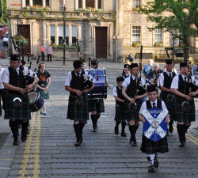
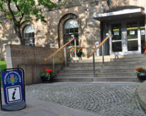
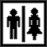

|
Information |
|
 |
Linlithgow: Birthplace of Mary Queen of
Scots, 20 miles west of Edinburgh, Junction 3 or 4 from M9 motorway
and on Edinburgh-Glasgow railway line.
Linlithgow Palace (EH49 7AL) is in the town centre. Please
park away from the Palace if possible
Low Port Centre (EH49 7HZ) on Blackness Road on east side of
town, opposite Tesco (parking).
Multimap locations for Linlithgow Palace Low Port Centre
Click here for
Scottish Train Timetables website
Click to see the Web Cams around
The Cross
and the
Canal Basin in Linlithgow |
|
 |
Links
Linlithgow Palace
phone 01506 845896
(from outside the UK +44 1506
845896)
Burgh Halls 01506 282720
|
 |
Dancing:
there is a wide range of dances with instruction given for them all.
The Palace
Courtyard (EH49 7AL) is open air with stone paving and cool.
Low Port Centre
(EH49 7HZ) is a large hall with a sprung floor and is very warm! |
|
|
Weather / Alternative Venue:
a decision is made as late as possible (up to 6.00pm). If there is
any doubt, the dancing will be inside, for the sake of the band, at
the Low Port Centre, Blackness Road opposite Tesco to the East side
of town.
If the Scotch Hop is to be held in the Low Port
Centre it will be posted on twitter click here

you can follow us on twitter @scotchhopp |
|
|
Finish:
about 10.00 p.m. in Palace, about
10.30 p.m. in Low Port Centre. |
|
|
Parking
Palace
If possible park away from the Palace.
Low
Port please use the car park behind Tesco |
 |
Seating: limited availability at both venues. |
|
|
Wheelchair access: Palace -
one small step: Low
Port Centre - ramps and lift. |
|
 |
Toilets:
the Palace has limited accommodation, but has a disabled one.
There are also toilets in the Burgh Halls in the Kirkgate
on the
approach to the Palace |
 |
Group bookings
If your Group is 10 or
more people please contact Sheila McCutcheon on 0131-331 1528 or e-mail us at ScotchHopCommittee@gmail.com
BEFORE the day of the event to arrange a group ticket. |
| Please note that we
are not responsible for the accuracy of information contained in
external links from this site. |